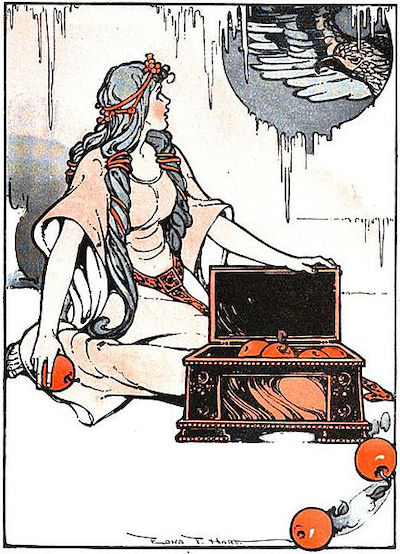
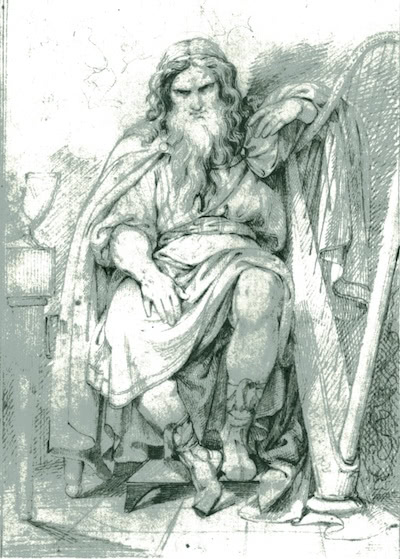

Skáldskaparmál
1. Ægir sækir heim æsi.
Einn maðr er nefndr Ægir eða Hlér. Hann bjó í eyju þeiri, er nú er kölluð Hlésey. Hann var mjök fjölkunnigr. Hann gerði ferð sína til Ásgarðs, en æsir vissu fyrir ferð hans, ok var honum fagnat vel ok þó margir hlutir gervir með sjónhverfingum. Ok um kveldit, er drekka skyldi, þá lét Óðinn bera inn í höllina sverð ok váru svá björt, at þar af lýsti, ok var ekki haft ljós annat, meðan við drykkju var setit.
Þá gengu æsir at gildi sínu, ok settust í hásæti tólf æsir, þeir er dómendr skyldu vera ok svá váru nefndir: Þórr, Njörðr, Freyr, Týr, Heimdallr, Bragi, Víðarr, Váli, Ullr, Hænir, Forseti, Loki. Slíkt sama ásynjur: Frigg, Freyja, Gefjun, Iðunn, Gerðr, Sigyn, Fulla, Nanna. Ægi þótti göfugligt þar um at sjást. Veggþili öll váru þar tjölduð með fögrum skjöldum. Þar var ok áfenginn mjöðr ok mjök drukkit. Næsti maðr Ægi sat Bragi, ok áttust þeir vit drykkju ok orðaskipti. Sagði Bragi Ægi frá mörgum tíðendum, þeim er æsir höfðu átt.
2. Þjazi jötunn rænti Iðunni.
Hann hóf þar frásögn, at þrír æsir fóru heiman, Óðinn ok Loki ok Hænir, ok fóru um fjöll ok eyðimerkr, ok var illt til matar. En er þeir koma ofan í dal nakkvarn, sjá þeir öxnaflokk ok taka einn uxann ok snúa til seyðis. En er þeir hyggja, at soðit mun vera, raufa þeir seyðinn, ok var ekki soðit. Ok í annat sinn, er þeir raufa seyðinn, þá er stund var liðin, ok var ekki soðit. Mæla þeir þá sín á milli, hverju þetta mun gegna.
Þá heyra þeir mál í eikina upp yfir sik, at sá, er þar sat, kvaðst ráða því, er eigi soðnaði á seyðinum. Þeir litu til, ok sat þar örn ok eigi lítill.
Þá mælti örninn: "Vilið þér gefa mér fylli mína af uxanum, þá mun soðna á seyðinum."
Þeir játa því. Þá lætr hann sígast ór trénu ok sezt á seyðinn ok leggr upp þegar it fyrsta lær uxans tvau ok báða bóguna.
Þá varð Loki reiðr ok greip upp mikla stöng ok reiðir af öllu afli ok rekr á kroppinn erninum. Örninn bregzt við höggit ok flýgr upp. Þá var föst stöngin við bak arnarins, en hendr Loka við annan enda stangarinnar. Örninn flýgr hátt svá, at fætr Loka taka niðr grjót ok urðir ok viðu, en hendr hans, hyggr hann, at slitna munu ór öxlum. Hann kallar ok biðr allþarfliga örninn friðar. En hann segir, at Loki skal aldri lauss verða, nema hann veiti honum svardaga at koma Iðunni út of Ásgarð með epli sín, en Loki vill þat. Verðr hann þá lauss ok ferr til lagsmanna sinna, ok er eigi at sinni sögð fleiri tíðendi um þeira ferð, áðr þeir koma heim.
En at ákveðinni stundu teygir Loki Iðunni út um Ásgarð í skóg nökkurn ok segir, at hann hefir fundit epli þau, er henni munu gripir í þykkja, ok bað, at hon skal hafa með sér sín epli ok bera saman ok hin. Þá kemr þar Þjazi jötunn í arnarham ok tekr Iðunni ok flýgr braut með ok í Þrymheim til bús síns.
3. Loki náði Iðunni ok dráp Þjaza.
En æsir urðu illa við hvarf Iðunnar, ok gerðust þeir brátt hárir ok gamlir. Þá áttu þeir æsir þing, ok spyrr hverr annan, hvat síðast vissi til Iðunnar, en þat var sét síðast, at hon gekk út ór Ásgarði með Loka. Þá var Loki tekinn ok færðr á þingit, ok var honum heitit bana eða píslum. En er hann varð hræddr, þá kvaðst hann mundu sækja eftir Iðunni í Jötunheima, ef Freyja vill ljá honum valshams, er hon á.
Ok er hann fær valshaminn, flýgr hann norðr í Jötunheima ok kemr einn dag til Þjaza jötuns. Var hann róinn á sæ, en Iðunn var ein heima. Brá Loki henni í hnotarlíki ok hafði í klóm sér ok flýgr sem mest. En er Þjazi kom heim ok saknar Iðunnar, tekr hann arnarharminn ok flýgr eftir Loka, ok dró arnsúg í flugnum. En er æsirnir sá, er valrinn flaug með hnotina ok hvar örninn flaug, þá gengu þeir út undir Ásgarð ok báru þannig byrðar af lokarspánum. Ok þá er valrinn flaug inn of borgina, lét hann fallast niðr við borgarvegginn. Þá slógu æsirnir eldi í lokarspánuna, en örninn mátti eigi stöðva sik, er hann missti valsins. Laust þá eldinum í fiðri arnarins, ok tók þá af fluginn. Þá váru æsirnir nær ok drápu Þjaza jötun fyrir innan ásgrindr, ok er þat víg allfrægt.
En Skaði dóttir Þjaza jötuns, tók hjálm ok brynju ok öll hervápn ok ferr til Ásgarðs at hefna föður síns. En æsir buðu henni sætt ok yfirbætr ok it fyrsta, at hon skal kjósa sér mann af ásum ok kjósa at fótum ok sjá ekki fleira af.
Þá sá hon eins manns fætr forkunnarfagra ok mælti: "Þenna kýs ek. Fátt mun ljótt á Baldri."
En þat var Njörðr ór Nóatúnum.
Þat hafði hon ok í sættargerð sinni, at æsir skyldu þat gera, er hon hugði, at þeir skyldu eigi mega, at hlægja hana. Þá gerði Loki þat, at hann batt um skegg geitar nökkurrar ok öðrum enda um hreðjar sér, ok létu þau ýmsi eftir ok skrækði hvárt tveggja hátt. Þá lét Loki fallast í kné Skaða, ok þá hló hon. Var þá ger sætt af ásanna hendi við hana.
4. Af ætt Þjaza.
Svá er sagt, at Óðinn gerði þat til yfirbóta við Skaða, at hann tók augu Þjaza ok kastaði upp á himin ok gerði af stjörnur tvær.
Þá mælti Ægir: "Mikill þykkir mér Þjazi fyrir sér hafa verit, eða hvers kyns var hann?"
Bragi svarar: "Ölvaldi hét faðir hans, ok merki munu þér at þykkja, ef ek segi þér frá honum. Hann var mjök gullauðigr. En er hann dó ok synir hans skyldu skipta arfi, þá höfðu þeir mæling á gullinu, er þeir skiptu, at hverr skyldi taka munnfylli sína ok allir jafnmargar. Einn þeira var Þjazi annarr Iði, þriði Gangr. En þat höfum vér orðtak nú með oss at kalla gullit munntal þessa jötna, en vér felum í rúnum eða í skáldskap svá, at vér köllum þat mál eða orð eða tal þessa jötna."
Þá mælti Ægir: "Þat þykkir mér vel fólgit í rúnum."
5. Upphaf Suttungamjaðar.
Ok enn mælti Ægir: "Hvaðan af hefir hafizt sú íþrótt, er þér kallið skáldskap?"
Bragi svarar: "Þat váru upphöf til þess, at goðin höfðu ósætt við þat fólk, er Vanir heita. En þeir lögðu með sér friðstefnu ok settu grið á þá lund, at þeir gengu hvárirtveggju til eins kers ok spýttu í hráka sínum. En at skilnaði þá tóku goðin ok vildu eigi láta týnast þat griðamark ok sköpuðu þar ór mann. Sá heitir Kvasir. Hann er svá vitr, at engi spyrr hann þeira hluta, er eigi kann hann órlausn.
Hann fór víða um heim at kenna mönnum fræði, ok þá er hann kom at heimboði til dverga nökkurra, Fjalars ok Galars, þá kölluðu þeir hann með sér á einmæli ok drápu hann, létu renna blóð hans í tvau ker ok einn ketil, ok heitir sá Óðrerir, en kerin heita Són ok Boðn. Þeir blendu hunangi við blóðit, ok varð þar af mjöðr sá, er hverr, er af drekkr, verðr skáld eða fræðamaðr. Dvergarnir sögðu ásum, at Kvasir hefði kafnat í mannviti, fyrir því at engi var þar svá fróðr, at spyrja kynni hann fróðleiks.
Þá buðu þessir dvergar til sín jötni þeim, er Gillingr heitir, ok konu hans. Þá buðu dvergarnir Gillingi at róa á sæ með sér. En er þeir fóru fyrir land fram, reru dvergarnir á boða ok hvelfðu skipinu. Gillingr var ósyndr, ok týndist hann, en dvergarnir réttu skip sitt ok reru til lands. Þeir sögðu konu hans þenna atburð, en hon kunni illa ok grét hátt. Þá spurði Fjalarr hana, ef henni myndi hugléttara, ef hon sæi út á sæinn, þar er hann hafði týnzt, en hon vildi þat. Þá mælti hann við Galar, bróður sinn, at hann skal fara upp yfir dyrrnar, er hon gengi út, ok láta kvernstein falla í höfuð henni, ok talði sér leiðast óp hennar. Ok svá gerði hann.
Þá er þetta spurði Suttungr jötunn, sonr Gillings, ferr hann til ok tók dvergana ok flytr á sæ út ok setr þá í flæðarsker. Þeir biðja Suttung sér lífsgriða ok bjóða honum til sættar í fóðurgjald mjöðinn dýra, ok þat verðr at sætt með þeim. Flytr Suttungr mjöðinn heim ok hirðir, þar sem heita Hnitbjörg, setr þar til gæzlu dóttur sína, Gunnlöðu. Af þessu köllum vér skáldskap Kvasis blóð eða dvergadrekku eða fylli eða nökkurs konar lög Óðreris eða Boðnar eða Sónar eða farskost dverga, fyrir því at sá mjöðr flutti þeim fjörlausn ór skerinu, eða Suttungamjöð eða Hnitbjargalögr."
Þá mælti Ægir: "Myrkt þykkir mér þat mælt at kalla skáldskap með þessum heitum. En hvernig kómuzt þér æsir at Suttungamiði?"
6. Hversu Óðinn komst at miðinum.
Bragi svarar: "Sjá saga er til þess, at Óðinn fór heiman ok kom þar, er þrælar níu slógu hey. Hann spyrr, ef þeir vili, at hann brýni ljá þeira. Þeir játa því. Þá tekr hann hein af belti sér ok brýndi ljána, en þeim þótti bíta ljárnir miklu betr ok föluðu heinina, en hann mat svá, at sá, er kaupa vildi, skyldi gefa við hóf. En allir kváðust vilja ok báðu hann sér selja, en hann kastaði heininni í loft upp. En er allir vildu henda, þá skiptust þeir svá við, at hverr brá ljánum á háls öðrum.
Óðinn sótti til náttstaðar til jötuns þess, er Baugi hét, bróðir Suttungs. Baugi kallaði illt fjárhald sitt ok sagði, at þrælar hans níu höfðu drepizt, en talðist eigi vita sér ván verkmanna. En Óðinn nefndist fyrir honum Bölverkr. Hann bauð at taka upp níu manna verk fyrir Bauga, en mælti sér til kaups einn drykk af Suttungamiði. Baugi kvaðst einskis ráð eiga at miðinum, sagði, at Suttungr vildi einn hafa, en fara kveðst hann mundu með Bölverki, ok freista, ef þeir fengi mjöðinn.
Bölverkr vann um sumarit níu manna verk fyrir Bauga, en at vetri beiddi hann Bauga leigu sínnar. Þá fara þeir báðir til Suttungs. Baugi segir Suttungi, bróður sínum, kaup þeira Bölverks, en Suttungr synjar þverliga hvers dropa af miðinum. Þá mælti Bölverkr til Bauga, at þeir skyldu freista véla nökkurra, ef þeir megi ná miðinum, en Baugi lætr þat vel vera. Þá dregr Bölverkr fram nafar þann, er Rati heitir, ok mælti, at Baugi skal bora bjargit, ef nafarrinn bítr. Hann gerir svá. Þá segir Baugi, at gegnum er borat bjargit, en Bölverkr blæss í nafarsraufina, ok hrjóta spænirnir upp í móti honum. Þá fann hann, at Baugi vildi svíkja hann, ok bað bora gegnum bjargit. Baugi boraði enn, en er Bölverkr blés annat sinn, þá fuku inn spænirnir. Þá brást Bölverkr í ormslíki ok skreið inn í nafarsraufina, en Baugi stakk eftir honum nafrinum ok missti hans.
Fór Bölverkr þar til, sem Gunnlöð var, ok lá hjá henni þrjár nætr, ok þá lofaði hon honum at drekka af miðinum þrjá drykki. Í inum fyrsta drykk drakk hann allt ór Óðreri, en í öðrum ór Boðn, í inum þriðja ór Són, ok hafði hann þá allan mjöðinn. Þá brást hann í arnarham ok flaug sem ákafast.
En er Suttungr sá flug arnarins, tók hann sér arnarham ok flaug eftir honum. En er æsir sá, hvar Óðinn flaug, þá settu þeir út í garðinn ker sín, en er Óðinn kom inn of Ásgarð, þá spýtti hann upp miðinum í kerin, en honum var þá svá nær komit, at Suttungr myndi ná honum, at hann sendi aftr suman mjöðinn, ok var þess ekki gætt. Hafði þat hverr, er vildi, ok köllum vér þat skáldfífla hlut. En Suttungamjöð gaf Óðinn ásunum ok þeim mönnum, er yrkja kunnu. Því köllum vér skáldskapinn feng Óðins ok fund ok drykk hans ok gjöf hans ok drykk ásanna."